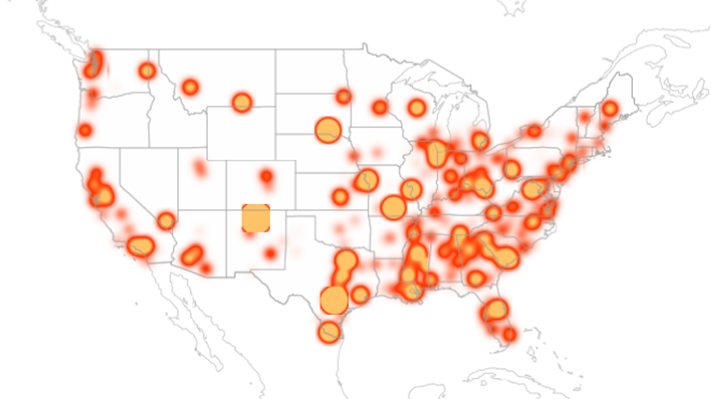
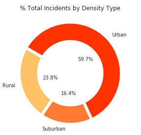
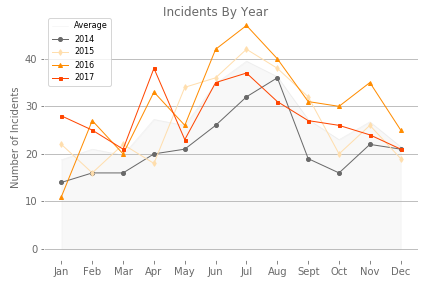
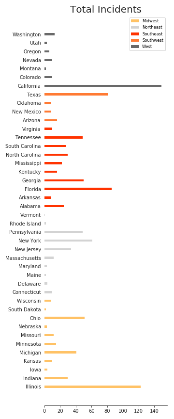

<!DOCTYPE html>
<html lang="en-us">

<head>
    <meta charset="UTF-8">
    <title>Mass Shooting Project: Regional Analysis</title>
    <link rel="stylesheet" href="https://stackpath.bootstrapcdn.com/bootstrap/4.3.1/css/bootstrap.min.css"
        integrity="sha384-ggOyR0iXCbMQv3Xipma34MD+dH/1fQ784/j6cY/iJTQUOhcWr7x9JvoRxT2MZw1T" crossorigin="anonymous">
    <script src="https://code.jquery.com/jquery-3.3.1.slim.min.js"
        integrity="sha384-q8i/X+965DzO0rT7abK41JStQIAqVgRVzpbzo5smXKp4YfRvH+8abtTE1Pi6jizo"
        crossorigin="anonymous"></script>
    <script src="https://cdnjs.cloudflare.com/ajax/libs/popper.js/1.14.7/umd/popper.min.js"
        integrity="sha384-UO2eT0CpHqdSJQ6hJty5KVphtPhzWj9WO1clHTMGa3JDZwrnQq4sF86dIHNDz0W1"
        crossorigin="anonymous"></script>
    <script src="https://stackpath.bootstrapcdn.com/bootstrap/4.3.1/js/bootstrap.min.js"
        integrity="sha384-JjSmVgyd0p3pXB1rRibZUAYoIIy6OrQ6VrjIEaFf/nJGzIxFDsf4x0xIM+B07jRM"
        crossorigin="anonymous"></script>
    <link rel="stylesheet" type="text/css" href="styleB2.css">
</head>

</html>

<body>

    <div class="main">

        <nav class="navbar fixed-top navbar-expand-lg navbar-dark bg-dark" id="navbar">
            <a class="navbar-brand" href="index.html">Mass Shooting Analysis</a>
            <button class="navbar-toggler" type="button" data-toggle="collapse" data-target="#navbarColor02"
                aria-controls="navbarColor02" aria-expanded="false" aria-label="Toggle navigation">
                <span class="navbar-toggler-icon"></span>
            </button>

            <div class="collapse navbar-collapse" id="navbarColor02">
                <ul class="navbar-nav mr-auto">
                    <li class="nav-item">
                        <a class="nav-link" href="index.html">Home <span class="sr-only">(current)</span></a>
                    </li>
                    <li class="nav-item">
                        <a class="nav-link" href="index.html#about">About</a>
                    </li>
                    <li class="nav-item dropdown active">
                        <a class="nav-link dropdown-toggle" href="" id="navbarDropdown" role="button"
                            data-toggle="dropdown" aria-haspopup="true" aria-expanded="false">
                            Regional
                        </a>
                        <div class="dropdown-menu" aria-labelledby="navbarDropdown">
                            <a class="dropdown-item" href="#">Regional</a>
                            <a class="dropdown-item" href="Incident.html">Incident</a>
                            <a class="dropdown-item" href="HateGroups.html">Hate Groups</a>
                            <a class="dropdown-item" href="GunLaws.html">Gun Laws</a>
                        </div>
                    </li>
                    <li class="nav-item">
                        <a class="nav-link" href="Comparisons.html">Comparisons</a>
                    </li>
                    <li class="nav-item">
                        <a class="nav-link" href="Data.html">Data</a>
                    </li>
                </ul>
            </div>
        </nav>

        <div class="heatmaps">
            <div class="container.fluid">
                <div class="row">

                    <div class="col col-lg-6 col-12">
                        
                        <div class="lbl">Total Incidents</div>
                    </div>

                    <div class="col col-lg-6 col-12">
                        
                        <div class="lbl">Fatalities Per Capita</div>
                    </div>

                    <div class="w-100"></div>

                    <div class="col col-lg-6 col-12">
                        <p class="txtblk"><br>
                            Although total incident count per county and victim count per capita were highest in urban
                            settings,
                            fatalities per capita were highest in rural settings (this may be beacuse of distance
                            to emergency response or healthcare facility). As density decreased, the fatality rate
                            increased.
                        </p>
                    </div>

                    <div class="w-100"></div>

                    <div class="row">

                        <div class="col col-lg-4 col-12">
                            
                        </div>

                        <div class="col col-lg-4 col-12">
                            
                        </div>

                        <div class="col col-lg-4 col-12">
                            
                        </div>

                    </div>

                    <div class="w-100"></div>

                    <div class="row">

                        <div class="col col-lg-4 col-12 order-md-1">
                            <p class="txtblk2"><br>
                                As the weather warms and the seasons change, there is an increase in mass shooting
                                incident counts, peaking in the summer months. 2016 had the highest concentration of
                                mass shootings.
                            </p>
                        </div>

                        <div class="col col-lg-8 col-12">
                            
                        </div>
                    </div>

                    <div class="w-100"></div>

                    <div class="row">

                        <div class="col">
                            
                        </div>

                        <div class="col">
                            
                        </div>
                    </div>
                </div>
            </div>
        </div>
    </div>
</body>